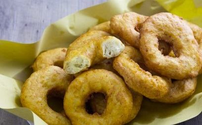

Per preparare i cuddrurieddri come prima cosa ponete le patate a bollire 1. Dopo 30-40 minuti, in base alla loro dimensione, saranno cotte; scolatele e ancora calde schiacciatele con lo schiaccia patate 2, raccogliendo la purea in una ciotola molto capiente 3. In questo caso non ci sarà bisogno di sbucciarle, perchè la buccia resterà all'interno dello schiacciapatate. Versate l'acqua tiepida in una ciotola, unite il sale 4 e mescolate 5. Aggiungete il lievito sbriciolato e mescolate ancora 6.Versate questo liquido all'interno delle patate 7 e mescolate con un cucchiaio fino ad ottenere una crema 8. Aggiungete tutta la farina in un colpo e iniziate ad impastare con le mani 9, trasferite poi il composto su un piano e lavorate ancora fino ad ottenere un composto omogeneo 10. Utilizzando un tarocco o un coltello ricavate dei pezzi da circa 140 g 11 e aiutandovi con le mani formate delle palline 12. Man mano ponetele su un vassoio dove avrete posizionato un canovaccio, distanziandole tra loro 13. Coprite con un altro canovaccio 14 e lasciate lievitare per circa 30 minuti 15. A questo punto versate l'olio di semi in un tegame e scaldatelo fino a raggiungere la temperatura di 170°. A questo punto sollevate la prima pallina e infilando le dita al centro, create il foro allargandole leggermente. Se dovessero appiccicare troppo potete inumidirvi le mani. Immergete la prima ciambella nell'olio caldo e muovetela aiutandovi con un mestolo. Inserendo la parte posteriore del mestolo all'interno del buco della ciambella,riuscirete ad allargarla ulteriormente.Cuocete per circa 2-3 minuti girando la ciambella di tanto in tanto fino a che non sarà ben dorata. Scolatela dall'olio 19 e trasferite su un vassoio foderato con carta da cucina 20. Procedete in questo modo fino a cuocere tutti i cuddrurieddri e serviteli ancora caldi!